Volume Is the Fuel — Not the Steering Wheel
In shortWe recorded the Binance order book every second for six coins over five months and ran eighteen tests on what volume really does. The through-line: volume tells you how big the next move is — almost never which way.
Narrated walkthrough · plays from YouTube when you press play.
① Buy vs sell — which side is bigger
Over the full history, buying and selling are almost perfectly matched. Sell-volume is marginally larger on five of six coins — ratios from 1.02× (BTC) to 1.06× (XRP) — while SOL is fractionally buy-led (0.98×). Buy-share sits between 48.5% and 50.5%. No coin is structurally dominated by one side.
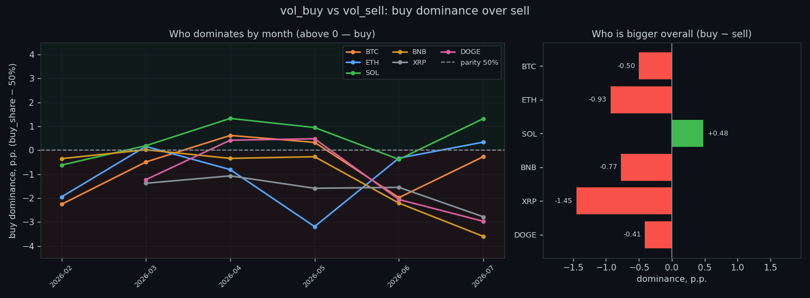
② Does volume predict the size of the move
Yes — clearly. Flow intensity and the size of the next move rise together, strongest on the shortest horizons: rank correlation peaks around 0.22–0.33 within seconds and decays as the window widens. In event terms, an above-normal volume burst is followed by five minutes running ×1.4–1.7 more volatile than usual — on every coin. Volume is a size signal.
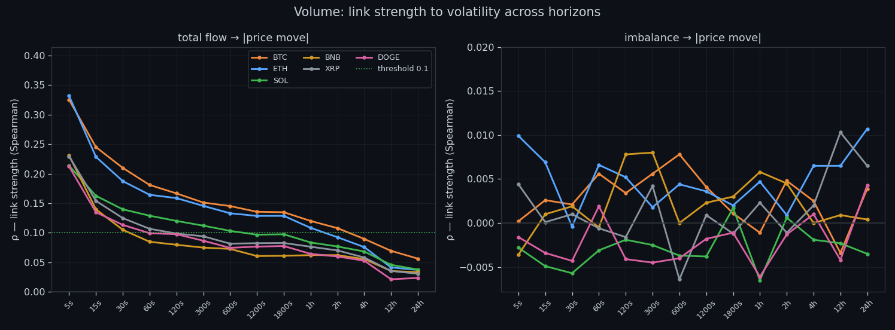
③ Who moves price more — buying or selling
We measure the price shift per +1σ of volume. Aggressive buying nudges price up (about +0.10 bp/σ on BTC at the low band) while aggressive selling barely moves it (about −0.01 bp/σ) — a small, asymmetric impact ratio. Neither side gives a reliable directional push; buying just leaves a slightly clearer footprint than selling.
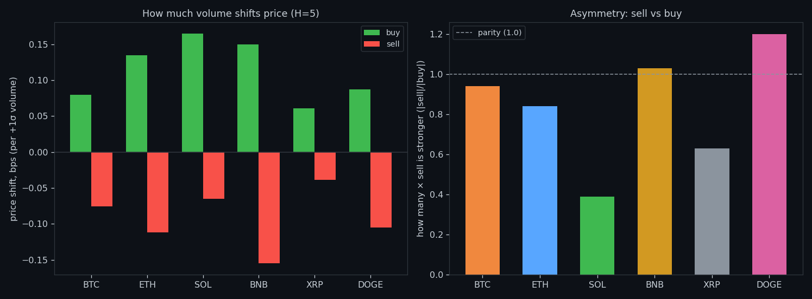
④ What counts as normal volume, by timeframe
'Normal' depends entirely on the clock. Per-second turnover is tiny; aggregate to minutes, hours and days and it grows by orders of magnitude (log scale). Establishing this baseline per coin per timeframe is what later lets us call a second 'a spike' — always relative to its own window, never an absolute number.
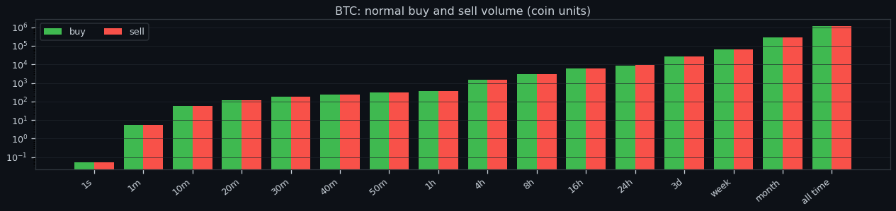
⑤ At which horizon volume predicts best
The link is strongest almost immediately. Total flow's correlation with the move peaks at the ~5-second window (ρ≈0.33 on BTC) and fades monotonically toward the daily scale. Imbalance peaks much later (~10 min) and even there is tiny (ρ≈0.008). The usable edge is short-horizon, and it is about magnitude — not side.
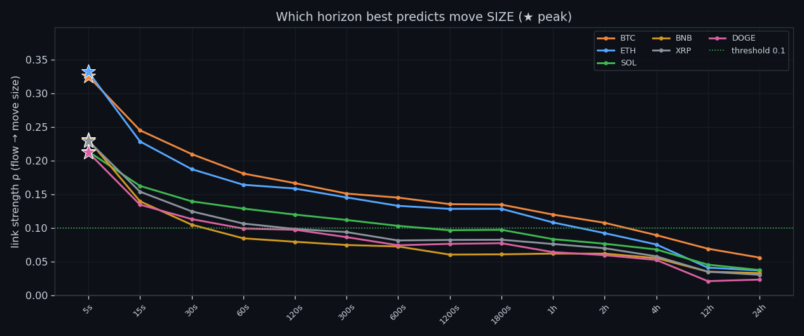
⑥ Does imbalance predict direction
Only weakly, and unevenly. Imbalance→direction correlation reaches ρ≈0.18 (BTC) and 0.20 (ETH) but collapses to about zero on SOL, XRP and DOGE. The directional bias is under ~1 bp per σ everywhere. So even the side of the flow — not just its size — is a poor compass for where price goes next.
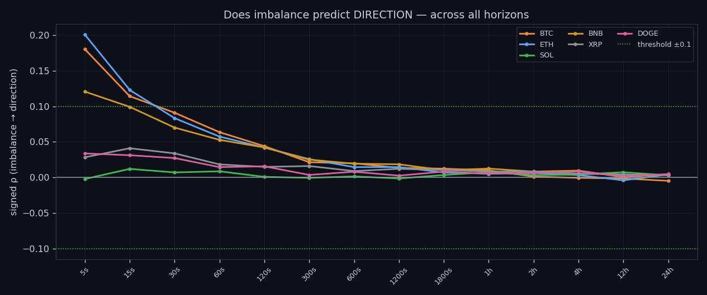
⑦ How long imbalance lasts before it evens out
Imbalance is fleeting. The share that persists falls fast as you widen the window — on BTC from ~84% at one second to ~40% at one minute and ~18% by twenty minutes. Buyers and sellers rebalance quickly; a one-sided burst rarely stays one-sided for long. That short lifetime is exactly why it can't steer longer moves.
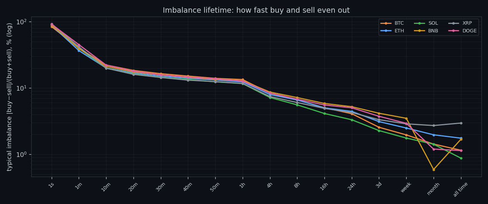
⑧ Volume has memory (autocorrelation)
Volume has real memory, and it grows with scale. Lag-1 autocorrelation of buy-flow on BTC rises from 0.23 (1s) to 0.36 (5s), 0.51 (1 min) and 0.57 (5 min). Busy seconds cluster into busy minutes — activity is self-reinforcing. This persistence is precisely what makes the size signal, volatility, forecastable at all.
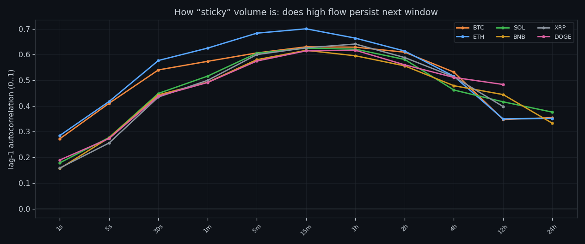
⑨ Each coin's volume fingerprint
Every coin has its own volume signature across timeframes — BTC and ETH trade in the thousands of coin-equivalents per bucket, XRP and DOGE in the hundreds-to-thousands — with buy and sell curves tracking each other tightly. These per-coin, per-window baselines feed every downstream test, so 'normal' always means normal for that market.
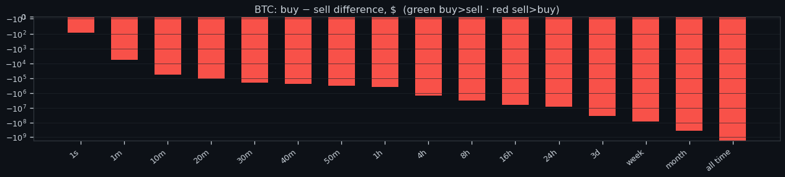
⑩ How big a spike really is
A 'spike' is the top-1% second (above q99) for its coin and window. These peaks tower over the ordinary second — many multiples of the normal level — and they are exactly the moments the size signal fires. Defining them relative to each coin's own baseline keeps the comparison fair across very different markets.
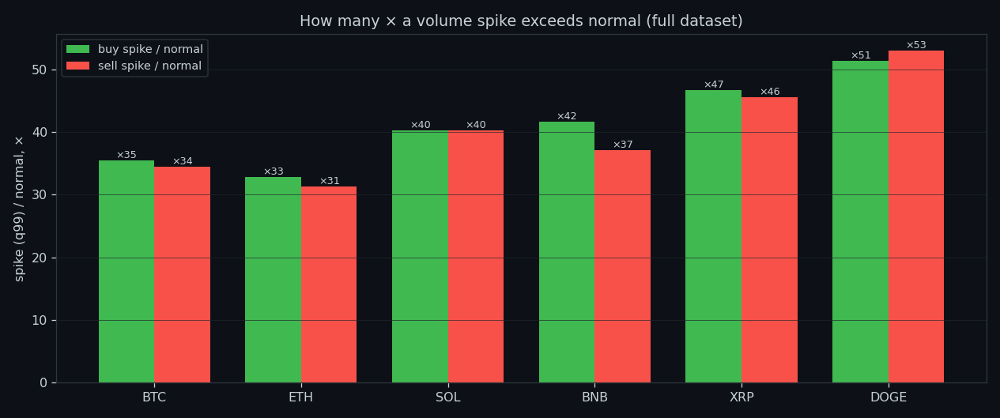
⑪ Most seconds are quiet
Sorting every second into 20 bands (ten below normal, ten above) shows a heavy concentration around and below the normal line, with a thin, long tail of high-volume seconds — the spikes. Buy and sell distributions mirror each other. The market spends most of its time idling, punctuated by rare bursts.
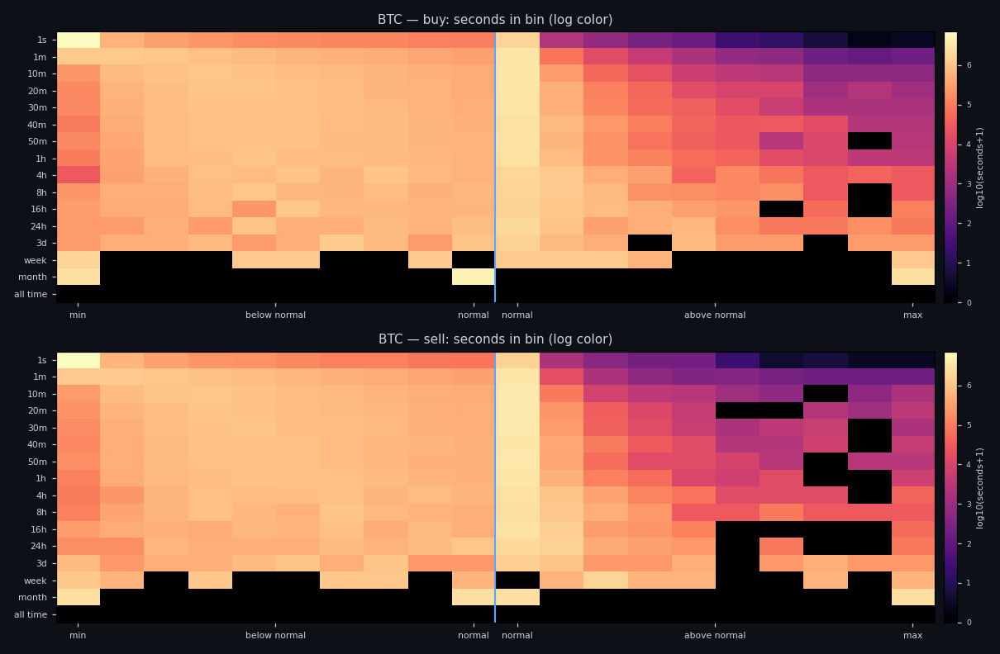
⑫ Episodes: spike / normal / lull
Grouping seconds into episodes (spike >q80, normal, lull <q20), the average BTC spike lasts ~60s, moves 0.09% and runs at 0.74 bps/s of volatility — but its net direction is ≈0. Only the extreme-imbalance tails tilt: strongly buy-heavy spikes close +0.065%, strongly sell-heavy −0.069%. Size is large and reliable; direction stays near a coin flip.
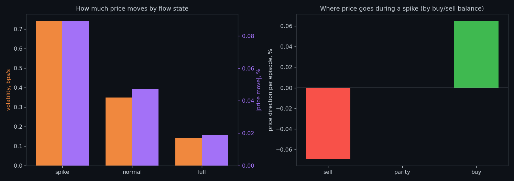
⑬ Long waves (hours…48h): the macro scale
Zoom out and something changes. Macro flow-waves last ~1.5h (median) and carry ~1% moves. Here sustained one-sidedness finally aligns with direction: BTC waves dominated by buying close about +0.89%, those dominated by selling about −0.90%. Over long horizons it is persistent imbalance — not a single burst — that moves price.
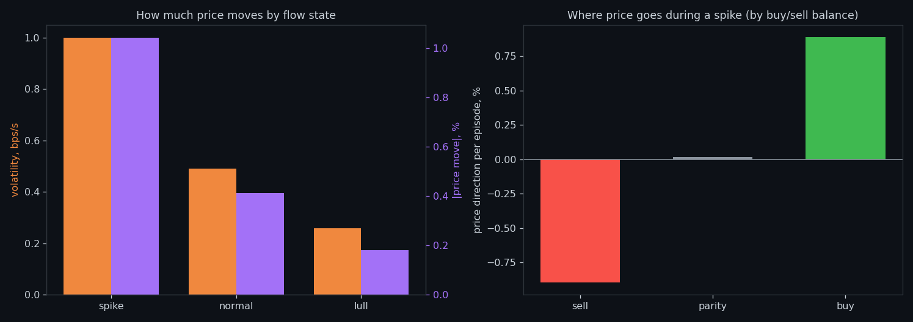
⑭ State sequences: which follows which
States are sticky and they chain. Overlaid on a 96-hour ribbon, spike / normal / lull persist and transition in patterns, and the next episode's volatility depends on the current state. Reading the sequence — not just the current second — sharpens the volatility forecast, while direction stays unpredictable from the sequence alone.
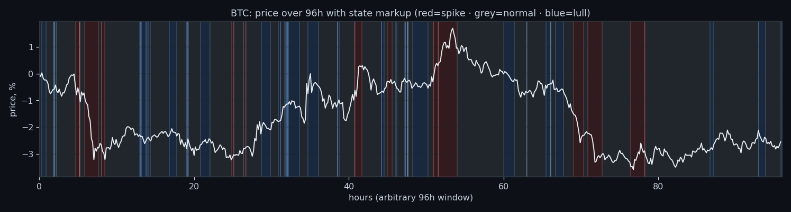
⑮ Can we read direction as it forms?
We split each episode into a forming half and a later half. Early buy-share correlates strongly with the move happening now (ρ≈0.63 on BTC) — you can read the present. But its correlation with the later move is ≈0 (ρ≈−0.08). You can see what is happening; you cannot use it to predict what comes next.
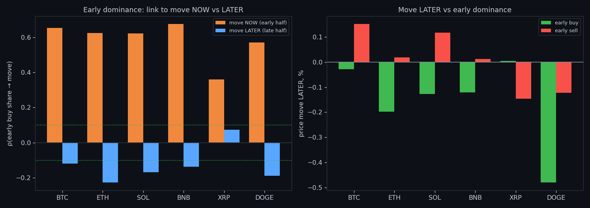
⑯ A spike at the range edge — reversal or continuation?
Does a spike near the top or bottom of the day's range signal a reversal or a continuation? Barely either. Position-in-range vs direction correlates ρ≈0.06 on BTC spikes, with buy/sell tilts of a few percent at most. Context helps a little — but a range-edge spike is not a clean directional trade.
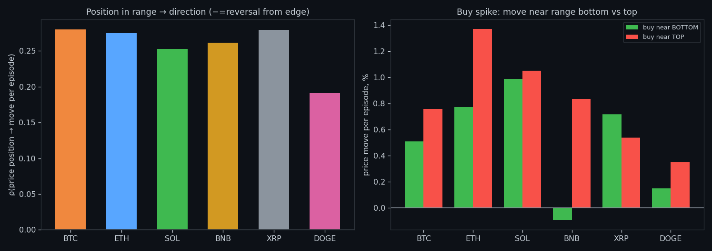
⑰ Spikes come in storms
Spikes are not evenly spaced — they cluster. Intervals between them have CV≈1.5 (well above 1), a median gap of ~5 minutes, and the vast majority arrive within six hours of the previous one. Interestingly, clustered spikes carry slightly smaller moves (0.089%) than isolated ones (0.103%). Turbulence comes in storms — and the first strike is often the biggest.
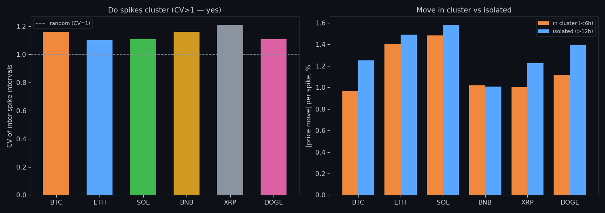
⑱ The forecast: memory, coupling, volatility
Pulling it together: buy and sell flow are nearly independent second-to-second (ρ≈0.13) but become tightly coupled at longer windows (ρ≈0.80 by twenty minutes) — a single 'activity' factor. That shared, persistent flow is what our models turn into a forward-volatility forecast. We predict how wild, not which way — and we log every call.
Research, not financial advice.
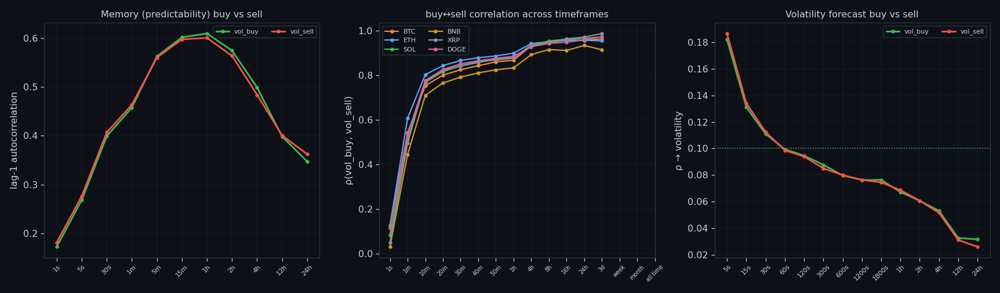
All our bots have been tested live. The best one is Line 7.
More than a dozen bots were built from this research. Line 7 — two small transformers that read 160 hours of order book as one picture — is the only one ahead of buy & hold in live trading: +5.44% since 5 Oct while BTC moved −5.29%. Every trade is in the report.
Everything on this site is research, not financial advice.
How to read this site in 5 minutes · All studies as one .md for AI · All research
← All research